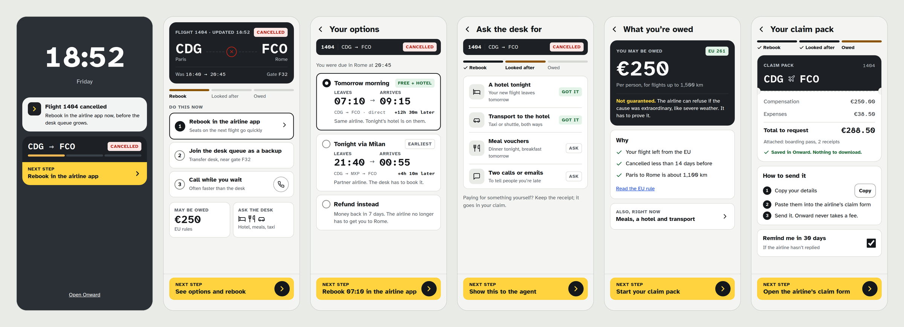
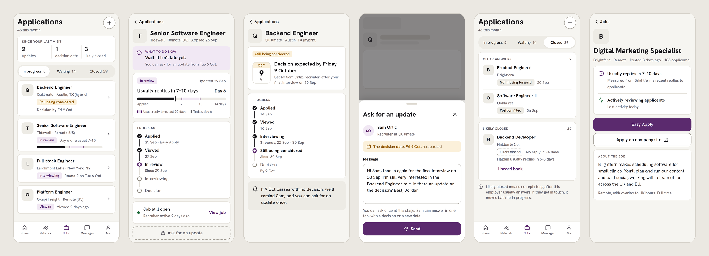

Case 01 · B2B dashboard
Kept
A dashboard that turns WhatsApp, Instagram and Facebook chats into confirmed orders for small sellers, designed for the day a post goes viral.

Three years of freelance UI/UX design. I start with research, find where people actually get stuck, and design from there.
A dashboard that turns WhatsApp, Instagram and Facebook chats into confirmed orders for small sellers, designed for the day a post goes viral.
A mobile app for the worst ten minutes of a trip: your flight is cancelled at the gate, and Onward tells you what to do now, what to ask for and what you're owed.

An unofficial redesign of what happens after you press Apply on LinkedIn: every application ends in an answer, and recruiters can close the loop for everyone in one step.

I've spent the last three years as a freelance UI/UX designer, working directly with clients from first idea to final screens. I care most about the part before the pixels: understanding how people really behave, then designing around it.
Open to full-time product design roles.